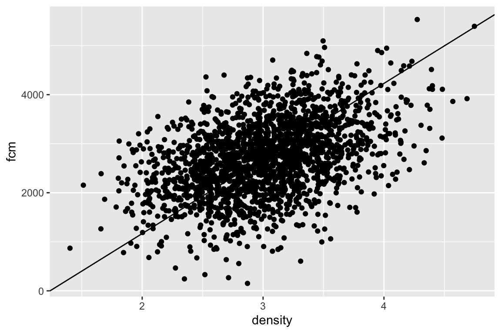
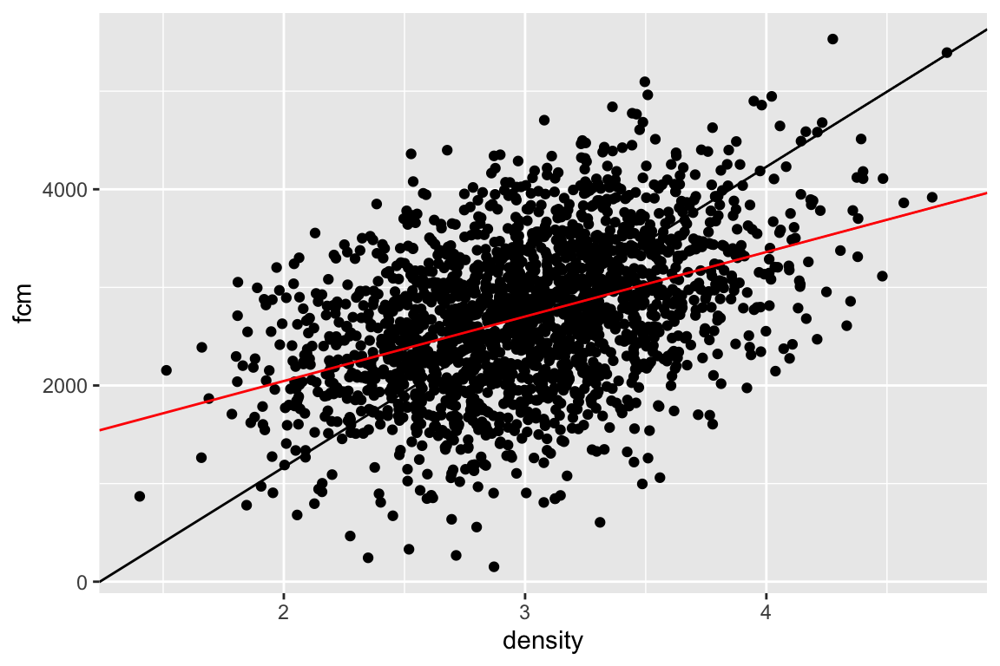
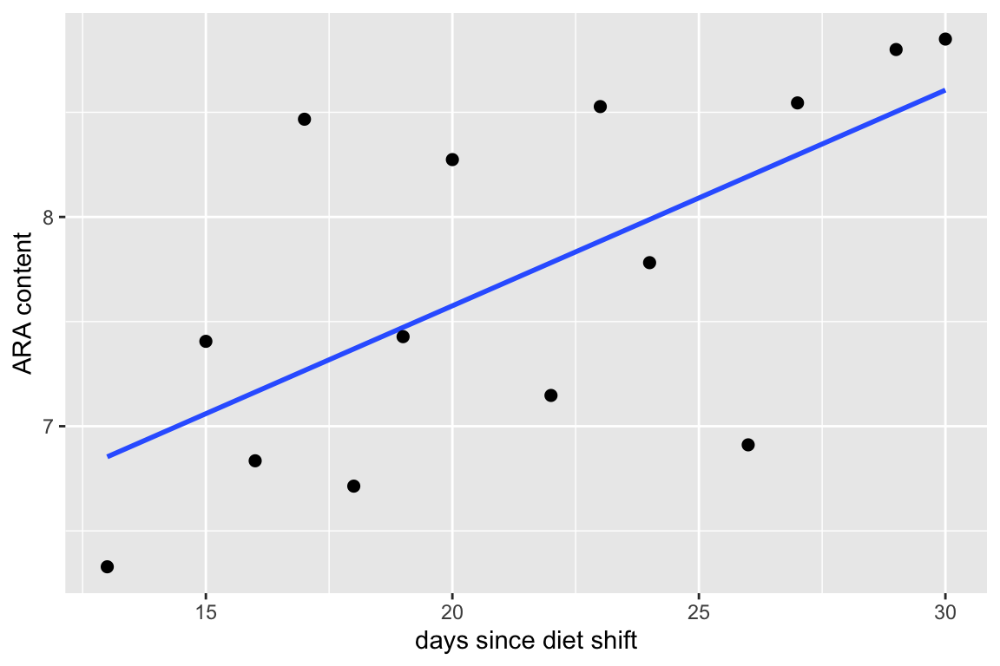

Chapter 8 Least Squares Estimation and the Decomposition of Variance
The linear models in the last chapter and for much of this book are fit to data using a method called “ordinary least squares” (OLS). This chapter explores the meaning of OLS and related statistics, including \(R^2\), as well as some alternative methods for bivariate regression.
8.1 OLS regression

The fake data illustrated in the scatterplot above (Figure ??) were modeled to look something like the squirrel fecal cortisol metabolite data in the previous chapter. If a typical student is asked to draw a regression line through the scatter, they typically draw a line similar to that in Figure ??. This line is not the OLS regression line but the major axis of an elipse that encloses the scatter of points–that students invariably draw this line suggests that the brain interprets the major axis of an elliptical scatter of points as a trend (This major axis line is an alternative method for estimating a slope and is known as standard major-axis regression. More about this at the end of this chapter.)

The OLS regression line is the red line in Figure ?? – the standard major axis line is left for comparison). The OLS regression line
- passes through the bivariate mean (\(\bar{x}\), \(\bar{y}\)) of the scatter, and
- minimizes the sum of the squared deviations from each point to it’s modeled value \(\sum{(y_i - \hat{y}_i)^2}\)
There are an infinite number of lines that pass through the bivariate mean (think of anchoring a line at the bivariate mean and spinning it). The OLS line is the line that minimizes the squared (vertical) deviations (“least squares”).
For a bivariate regression, the slope (coefficient \(b_1\) of \(X\)) of the OLS model fit is computed by
\[\begin{equation} b_1 = \frac{\mathrm{COV}(X, Y)}{\mathrm{VAR}(X)} \end{equation}\]This equation is worth memorizing. We will generalize this into a more flexible equation in a few chapters.
8.2 How well does the model fit the data? \(R^2\) and “variance explained”
Let’s switch to real data.
- Source: Dryad Digital Repository. https://doi.org/10.5061/dryad.056r5
- File: “Diet-shift data.xls”
Fish require arachidonic acid (ARA) and other highyly unsaturated fatty acids in their diet and embryo and yolk-stage larvae obtain these from yolk. Fuiman and Faulk (xxx) designed an experiment to investigate if red drum (Sciaenops ocellatus) mothers provision the yolk with ARA from recent dietary intake or from stored sources in somatic tissues. The data below are from experiment 8. The x-axis is the days since a diet shift to more and less ARA (\(days\)) and the y-axis is the ARA content of the eggs (\(ARA\)).

The statistic \(R^2\) is a measure of the fit of a model to data. The \(R^2\) for the fit of the egg data is 0.42. \(R^2\) is the fraction of two variances \(\frac{\mathrm{VAR}(Model)}{\mathrm{VAR}(Y)}\), or, the fraction of the variance of \(Y\) “explained by the model.” The value of \(R^2\) ranges from zero (the fit cannot be any worse) to one (the fit is “pefect”).
To understand \(R^2\), and its computation, a bit more, let’s look at three kinds of deviations.
Figure 8.1: Three kinds of deviations from a fit model. A. Deviations of the measured values from the mean. These are in the numerator of the equation of the sample variance. The dashed line is the mean ARA content. B. Deviations of the measured values from the modeled values. The sum of these deviations squared is what is minimized in an OLS fit. C. Deviations of the modeled values from the mean ARA content. The measured values are in gray, the modeled values in black
Figure 8.1A shows the deviations from the measured values to the mean value (dashed line). These are the deviations in the numerator of the equation to compute the variance of \(ARA_EGG_MG\). Figure 8.1B shows the deviations of the measured values from the modeled values. The sum of these deviations squared is what is minimized by the OLS fit. The bigger these deviations are, the worse the model fit. Figure 8.1C shows the deviations of the modeled values to the mean value. The bigger these deviations are, the better the model fit.
The sums of the squares of these deviations (or “sums of squares”) have names:
\[\begin{equation} \mathrm{SS(total)} = \sum{(y_i - \bar{y})^2} \end{equation}\] \[\begin{equation} \mathrm{SS(error)} = \sum{(y_i - \hat{y_i})^2} \end{equation}\] \[\begin{equation} \mathrm{SS(model)} = \sum{(\hat{y_i} - \bar{y})^2} \end{equation}\]Again, \(\mathrm{SS(total)}\) is the numerator of the equation for the sample variance. It is called “s-s-total” because \(\mathrm{SS(total)} = \mathrm{SS(model)} + \mathrm{SS(error)}\). That is, the total sums of squares can be decomposed into two components: the modeled sums of squares and the error sums of squares. Given these components, it’s easy to understand \(R^2\)
\[\begin{equation} R^2 = \frac{SS(model)}{SS(total)} \end{equation}\]\(R^2\) is the fraction of the total sums of squares that is due to (or “explained by”) the model sums of squares. Above I said that \(R^2\) is the fraction of variance explained by the model. Equation xxx is a ratio of variance, but the \((n-1)^{-1}\) in both the numerator and the denominator cancel out. Finally, many sources give the equation for \(R^2\) as
\[\begin{equation} R^2 = 1- \frac{SS(error)}{SS(total)} \end{equation}\]which is an obvious alternative given the decomposition. I prefer the former equation because it emphasizes the model fit instead of model ill-fit.